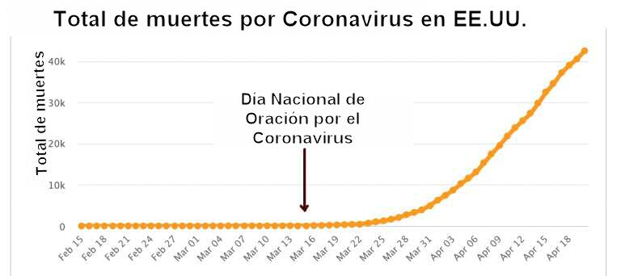

El coronavirus demuestra que el dios cristiano no existe
(Originalmente publicado en Patheos)
«Hasta que dejen ir a Dios y se apoderen de ustedes mismos, de los poderes innatos de sus propios seres, no hay esperanza para ustedes… dejen de orar y váyanse a trabajar».
–Lois Waisbrooker, c. 1896.
Es simple lógica. El dios cristiano promete responder a la oración. Las oraciones hacia este dios no son respondidas. Por lo tanto, el dios cristiano no existe.
En este momento, millones de cristianos le están pidiendo a su dios que derrote el coronavirus y sane a los enfermos. Esas oraciones no están teniendo efecto.
No es sólo el coronavirus, por supuesto. Podríamos tomar el ejemplo del terrible terremoto de Lisboa de 1755, que Voltaire llamó una “danza repelente de la muerte”, y sobre el cual el orador del siglo XIX Robert Ingersoll concluyó que “negó la existencia de Dios”. O la “gripe española” de 1918, que mató a mi bisabuelo. O los ataques terroristas de 2001, que llevaron a Richard Dawkins a decir: “Mi respeto por las religiones abrahámicas se fue con el humo y el polvo del 11 de septiembre”.
La historia está llena de ejemplos, pero sólo necesitamos uno. El SARS-CoV-2 es lo suficientemente virulento como para matar al dios cristiano sin ayuda.
¿Qué promete el dios cristiano?
El dios cristiano hace una promesa cristalina: “Contestaré tus oraciones”.
Jesús declaró audazmente: “Y todo lo que pidiereis en oración, creyendo, lo recibiréis.” (Mateo 21: 22) No hay ambigüedad aquí. “Todo” significa “todas las cosas”. Incluso aclaró: “si a este monte dijereis: Quítate y échate en el mar, será hecho.”
Jesús, quien dijo “Yo y el Padre uno somos” [Juan 10: 30], confirmó esto en muchos otros pasajes:
“Por tanto, os digo que todo lo que pidiereis orando, creed que lo recibiréis, y os vendrá.” – Marcos 11: 24
“Otra vez os digo, que si dos de vosotros se pusieren de acuerdo en la tierra acerca de cualquiera cosa que pidieren, les será hecho por mi Padre que está en los cielos.” – Mateo 18: 19
“Pedid, y se os dará; buscad, y hallaréis; llamad, y se os abrirá. Porque todo aquel que pide, recibe; y el que busca, halla; y al que llama, se le abrirá.” – Mateo 7: 7-8
“Tened fe en Dios. Porque de cierto os digo que cualquiera que dijere a este monte: Quítate y échate en el mar, y no dudare en su corazón, sino creyere que será hecho lo que dice, lo que diga le será hecho.” – Marcos 11: 22-23
“De cierto, de cierto os digo: El que en mí cree, las obras que yo hago, él las hará también; y aun mayores hará, porque yo voy al Padre. Y todo lo que pidiereis al Padre en mi nombre, lo haré, para que el Padre sea glorificado en el Hijo. Si algo pidiereis en mi nombre, yo lo haré.” – Juan 14: 12-14
“Si permanecéis en mí, y mis palabras permanecen en vosotros, pedid todo lo que queréis, y os será hecho.” – Juan 15: 7
“No me elegisteis vosotros a mí, sino que yo os elegí a vosotros, y os he puesto para que vayáis y llevéis fruto, y vuestro fruto permanezca; para que todo lo que pidiereis al Padre en mi nombre, él os lo dé.” – Juan 15: 16
“Pues si vosotros, siendo malos, sabéis dar buenas dádivas a vuestros hijos, ¿cuánto más vuestro Padre que está en los cielos dará buenas cosas a los que le pidan?” – Mateo 7: 11
“De cierto, de cierto os digo, que todo cuanto pidiereis al Padre en mi nombre, os lo dará. … pedid, y recibiréis, para que vuestro gozo sea cumplido.” – Juan 16: 23-24
Otros escritores del Nuevo Testamento estuvieron de acuerdo:
“y cualquiera cosa que pidiéremos la recibiremos de él, porque guardamos sus mandamientos, y hacemos las cosas que son agradables delante de él.” – 1 Juan 3: 22
“Y esta es la confianza que tenemos en él, que si pedimos alguna cosa conforme a su voluntad, él nos oye. Y si sabemos que él nos oye en cualquiera cosa que pidamos, sabemos que tenemos las peticiones que le hayamos hecho.” – 1 Juan 5: 14-15
“¿Está alguno enfermo entre vosotros? Llame a los ancianos de la iglesia, y oren por él… Y la oración de fe salvará al enfermo, y el Señor lo levantará; y si hubiere cometido pecados, le serán perdonados.” – Santiago 5: 14-15
La misma promesa aparece en el Antiguo Testamento:
“Deléitate asimismo en Jehová, Y él te concederá las peticiones de tu corazón.” (Salmo 37: 4)
El reclamo es indiscutible. El dios cristiano omnipotente y omnibenevolente promete responder “a todos los que pidan”, “a todas las cosas”, “lo que pidan en oración”. Si un cristiano creyente ora, “se hará por ti”, “recibirás”, “será tuyo”, “lo haré”.
No hay promesa más sólida en las Escrituras.
El dios cristiano promete responder la oración no con “Sí, No o Espera”, como afirman algunos apologistas. Él promete con un inequívoco “Sí”.
¿Responde Dios a la oración?
«¡Cuántas son las peticiones fervientes, presentadas en fe por los adoradores de Dios, que nunca se otorgan!»
–Emma Martin, 1840
«Nada falla tanto como la oración».
–Anne Gaylor, 1978
Multitudes de cristianos han estado orando fervientemente. Los jesuitas le pidieron a Jesús que “sane a los enfermos del virus”. La organización de ayuda cristiana World Vision está pidiendo a Dios Todopoderoso que “evite que este nuevo coronavirus continúe propagándose”. Los bautistas del sur están suplicando: “Señor, tú eres el gran médico, así que oramos por la curación de las víctimas de COVID-19”. La consejera espiritual del presidente Trump, Paula White, dijo: “Creo de la misma manera que si le pedimos a Dios todopoderoso que intervenga divinamente como lo hace tantas veces, que la epidemia puede ser detenida”.
Entonces, ¿por qué miles continúan sucumbiendo indiscriminadamente al coronavirus? Las muertes trágicas incluyen creyentes devotos, así como ministros, sacerdotes y obispos. Están suplicando a su Señor por protección, pero el virus insolente, que no hace excepción de personas, está retozando imprudentemente alrededor del planeta, ajeno a sus creencias.
A mediados de marzo, el presidente Trump finalmente se dio cuenta de que la pandemia era un problema. El número de muertes de COVID-19 en los Estados Unidos se acercaba a 100. Así que anunció (por tuit) un Día Nacional de Oración, “buscando la protección de Dios”.
«Es un gran honor declarar el domingo 15 de marzo como Día Nacional de Oración. Somos un país que, a lo largo de nuestra historia, ha buscado en Dios protección y fortaleza en momentos como estos… No importa dónde te encuentres, te aliento a que recurras a la oración en un acto de fe. ¡Juntos, PREVALECEREMOS fácilmente!»
En la proclamación de Trump oró «para que la mano sanadora de Dios se coloque sobre la gente de nuestra nación… Porque con Dios nada será imposible».
¿Y entonces qué pasó?
Si miras un gráfico, puedes ver que la tasa de mortalidad de COVID-19 se disparó dramáticamente después de eso.
Un mes después hubo más de 30.000 muertes conocidas. Una semana después se acercó a 50.000. La triste estadística será mayor cuando leas esto. Las familias cristianas no se están salvando. La oración no está haciendo ninguna diferencia. De hecho, la renuencia de algunos pastores a cerrar sus santuarios, confiando en que Jesús quiso decir lo que prometió, sin duda ha aumentado el riesgo de infección entre los feligreses.
Las montañas no se arrojan al mar.
¿Es efectiva la oración gubernamental?
«¿Quién puede probar que una sola oración alguna vez fue efectiva? — ¿que cualquier evento en la naturaleza alguna vez fue alterado o cambiado por la oración? … “¡No es mi voluntad, Señor, pero que así sea!” es, después de todo, resignarse a lo inevitable.»
–Elmina D. Slenker, 1870
Desde la década de 1950, el presidente de los Estados Unidos ha emitido una proclamación anual del “Día Nacional de Oración”. Muchos gobernadores y alcaldes han hecho eco, pidiendo la protección de Dios para nuestra nación. La Proclamación de 2019 del presidente Trump dijo:
«Hoy, en este Día Nacional de Oración, una vez más nos reunimos para agradecer a Dios Todopoderoso por las abundantes bendiciones que Él ha otorgado a nuestra gran nación… También reconocemos nuestra dependencia del amor de Dios para guiar a nuestras familias, comunidades y nuestro país lejos del daño y hacia la abundancia y la paz.»
Mira alrededor. ¿Tuvo eso algún efecto?
El tema para el Día Nacional de Oración de este año el 7 de mayo será “La Gloria de Dios en la Tierra”. Esa frase involuntariamente trágica y cómica fue seleccionada hace muchos meses, antes de que la gloria del virus desfilara por la tierra, antes de que la ironía hubiera sido evidente. Y, sin embargo, la gente continuará orando, esperando que quizás esta vez Dios cumpla su promesa.
Después de que el gobernador Rick Perry proclamara “Días de oración por lluvia en el estado de Texas” en abril de 2011, pidiendo “la curación de nuestra tierra”, no sólo la lluvia no cumplió; la sequía empeoró. Los incendios forestales continuaron asolando el terreno. La primera lluvia importante en Texas llegó en octubre, más de 160 días después. Perry debería haber seguido el consejo de Mark Twain: “Es mejor leer el pronóstico del tiempo antes de orar por lluvia”.
Cuando el gobernador de Florida, Rick Scott, oró públicamente para que el huracán Irma se desviara de su estado en 2017, la tormenta destructiva no prestó atención. Esa despiadada tempestad fue apodada “Irmagedón”.
El 9 de abril de este año, el alcalde de Houston, Sylvester Turner, pidió a los ciudadanos que “Por favor hagan una pausa al mediodía desde su casa, trabajo, la tienda, la oficina del médico, por un momento de oración o meditación silenciosa, y pídanle a Dios a su manera que sane nuestra tierra… Pedimos a nuestras iglesias con campanas que toquen 12 veces para mostrar unidad y fortaleza”.
Unos días después, el domingo de Pascua, las tormentas y tornados dañaron severamente las iglesias en el sur. Un campanario bautista con una imponente cruz fue destruido por un rayo en Alabama. Esto a pesar del hecho de que esas congregaciones habían estado orando fielmente por la protección de Dios.
“Hágase tu voluntad”
«Nos enseñan a orar “Hágase tu voluntad en la Tierra como en el cielo.” Si la cosa no se puede hacer, ¿Por qué perder el aliento pidiéndola?»
–Elizabeth Cady Stanton, 1869
Los cristianos son conscientes del fracaso de sus oraciones, porque a menudo agregan “sin embargo, que no se haga mi voluntad sino la tuya”. Algunos insisten en que los versos (citados anteriormente) que claramente prometen responder a la oración, deben interpretarse de manera menos literal. “La oración no es una varita mágica”, escuchamos a veces. En el Padrenuestro, por ejemplo, Cristo aconsejó a sus seguidores que le pidieran al Padre: “Hágase tu voluntad”. Si Dios tiene un propósito para permitir que continúe el coronavirus, ¿a quién debemos pedirle lo contrario?
La respuesta obvia es que si crees en la Biblia, realmente conoces la voluntad de Dios. “Lo haré”, dijo Jesús. Si él es un dios amoroso, entonces querrá aliviar el dolor y el sufrimiento.
Entonces, ¿por qué los cristianos siguen orando? Si Dios va a hacer su voluntad, ¿de qué sirve pedir lo contrario? ¿Acaso esperan que esta vez Dios les sonría y rompa las leyes de la naturaleza a su favor? ¿Es diferente de un ateo con la esperanza de que quizás esta vez se gane la lotería?
Digámoslo claramente: el emperador no tiene ropa y el dios cristiano no existe.
¿Es culpa nuestra?
El reverendo Ralph Drollinger, el pastor evangélico que lleva a cabo estudios bíblicos en la Casa Blanca para el gabinete del presidente Trump, culpa al pecado por el coronavirus: “Cada vez que un individuo o grupo corporativo de personas transgrede los preceptos inviolables de la Palabra de Dios, él, ella, ellos o la institución, sufrirán las consecuencias respectivas”, escribió. “Lo más seguro es que Estados Unidos enfrenta esta forma de juicio de Dios”.
Algunos cristianos predican que la oración es contingente. Los desastres naturales son en realidad castigos de Dios, proclaman. No responde la oración en este momento porque Estados Unidos le ha dado la espalda. Citan versículos que condicionan el favor de Dios sobre nuestra obediencia.
“si se humillare mi pueblo, sobre el cual mi nombre es invocado, y oraren, y buscaren mi rostro, y se convirtieren de sus malos caminos; entonces yo oiré desde los cielos, y perdonaré sus pecados, y sanaré su tierra.” – 2 Crónicas 7: 14
Así que la plaga es culpa nuestra.
En realidad, no lo es. Tengan en cuenta que ese versículo es sólo la segunda mitad de una oración. La primera mitad dice:
“Si yo cerrare los cielos para que no haya lluvia, y si mandare a la langosta que consuma la tierra, o si enviare pestilencia a mi pueblo;” – 2 Crónicas 7: 13
Ponga esos versículos en el orden correcto, y veremos de qué es que promete Dios “curar la tierra”: ¡de él mismo!
En mi libro, “DIOS: El personaje más desagradable de toda ficción” [GOD: The Most Unpleasant Character in All Fiction], cito más de 50 pasajes que muestran que el Dios bíblico y celoso usa la peste y las plagas para castigar a su pueblo por adorar a alguien que no sea él mismo. Aquí hay algunos:
“Yo amontonaré males sobre ellos… Consumidos serán de hambre, y devorados de fiebre ardiente Y de peste amarga;” – Deuteronomio 32: 23-24
“Y Jehová envió la peste sobre Israel… y murieron del pueblo… setenta mil hombres.” – 2 Samuel 24: 15
“Así Jehová envió una peste en Israel, y murieron de Israel setenta mil hombres.” – 1 Crónicas 21: 14
“Y heriré a los moradores de esta ciudad, y los hombres y las bestias morirán de pestilencia grande.” – Jeremías 21: 6
Para más ejemplos [en inglés], ver http://unpleasantgod.ffrf.org
En lugar de un Día Nacional de Oración, aquellos que obstinadamente continúan creyendo en la deidad bíblica deberían proclamar un Día Nacional de Maldecir a Dios. Su dios causó el virus y no hará nada para detenerlo.
“Dios no paró el virus”
«Nos arrastramos y adoramos y le pedimos a Dios que haga lo que nosotros mismos deberíamos haber hecho hace mil años, y podemos hacerlo ahora, tan pronto como lo elijamos.»
–Charlotte Perkins Gilman, 1923.
«Buenas obras en lugar de largas oraciones.»
–Anne Royall, activista feminista del siglo XIX.
El 14 de abril, el gobernador Cuomo de Nueva York, expresó un optimismo cauteloso de que la curva comenzaba a aplanarse en su estado. “Nuestro comportamiento ha detenido la propagación del virus”, dijo. “Dios no detuvo la propagación del virus. Y lo que hacemos, cómo actuamos, determinará cómo se propague ese virus.”
Exactamente. Lo que hacemos. Debería ser obvio, incluso para aquellos que creen en la oración (incluido Cuomo, que es católico), que los remedios efectivos no provienen de rogar a Dios. La oración puede ofrecer esperanza y consuelo a algunos, pero la ciencia hace el trabajo pesado de resolver problemas a través del esfuerzo humano. Los valientes trabajadores de la salud (incluidos los creyentes y no creyentes) y las políticas gubernamentales impuestas, como refugiarse en casa, son lo que marca la diferencia.
No hay buena evidencia para ningún dios. ¿Pero no es un alivio saber que el dios cristiano no existe? En lugar de distraernos y decepcionarnos al suplicar a una antigua deidad llena de amenazas vacías y promesas más vacías, abramos los ojos, levantémonos de nuestras rodillas, remanguémonos y trabajemos con la ciencia y la medicina para combatir esta pandemia.
Robert Ingersoll lo dijo mejor: “Las manos que ayudan son mucho mejores que los labios que oran”.
[Las citas de librepensadoras femeninas se encuentran en “Women Without Superstition: No Gods—No Masters” (Mujeres sin superstición: Sin dioses, sin amos), editado por Annie Laurie Gaylor.]
Dan Barker, exministro cristiano, es el co-presidente de la Freedom From Religion Foundation y cofundador de The Clergy Project. Ha escrito muchos libros, incluyendo Life Driven Purpose, Mere Morality y Godless: How an Evangelical Preacher Became One of America’s Leading Atheists.
Volver a la sección Sociedad y religión
Comentarios
Comments powered by Disqus